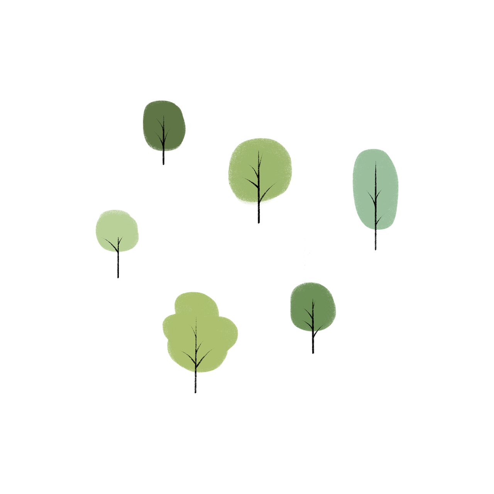

Some cute trees:
At Mozilla, we're a global community of
working together ...
This is a link: Mozilla Manifesto
El 18 de marzo de 2021, reportes coreanos rumoreaban un posible regreso del grupo agendado para el mes de Abril y que, de hecho, ya habían finalizado de grabar el video musical de su canción principal. Así al día siguiente, HIGHUP Entertainment confirmó los dichos respecto al mes agendado para el regreso del grupo.